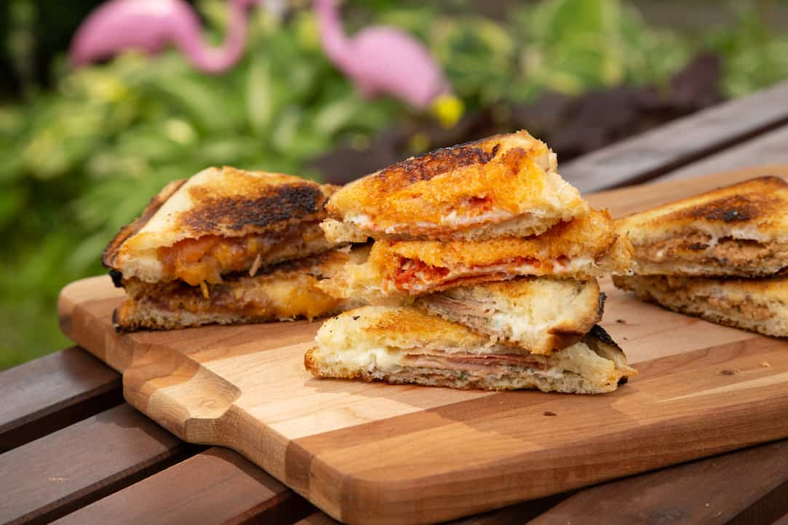

Mountain Pies

I'll bet you can't beat these Mountain Pies
Ingredients
- sandwich bread
- butter
- pizza sauce
- mozzarella
- pepperoni
Steps
- Have a cleaned pie iron open and ready.
- Spread an even layer of butter or margarine on one side of two pieces of bread.
- Place the bread butter side down into the mountain pie maker.
- Layer the fillings on top of the bread being careful to not get too close to the edges of the bread.
- Add the second piece of bread butter side up.
- Add the top of the pie iron and clip it shut.
- Cook over coals and not the flames.